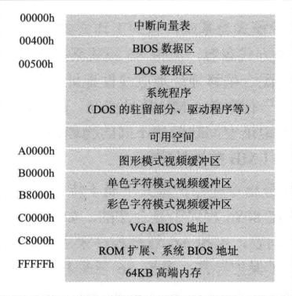
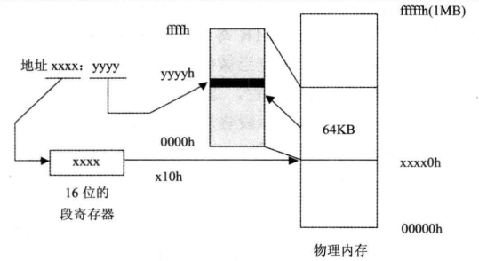
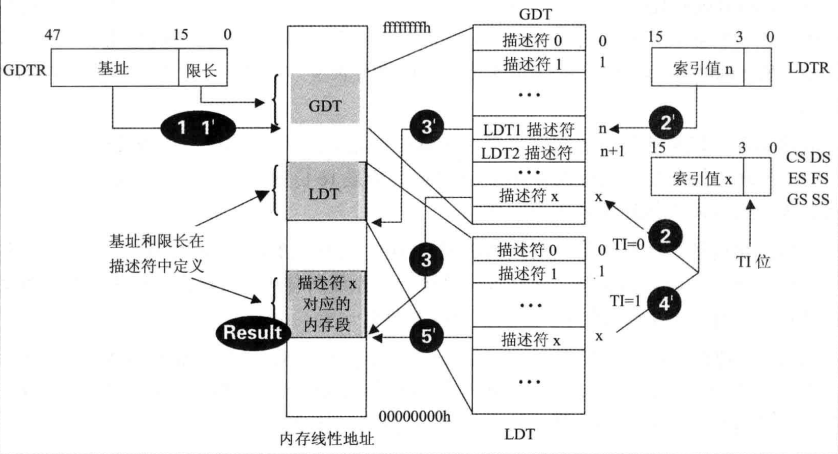
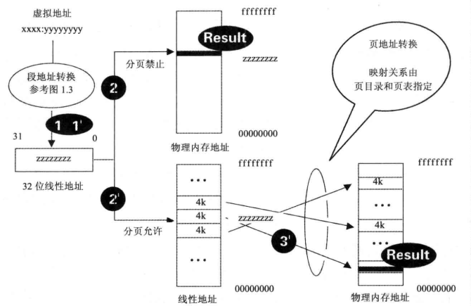
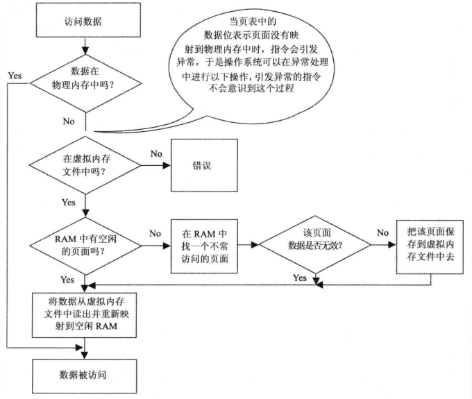
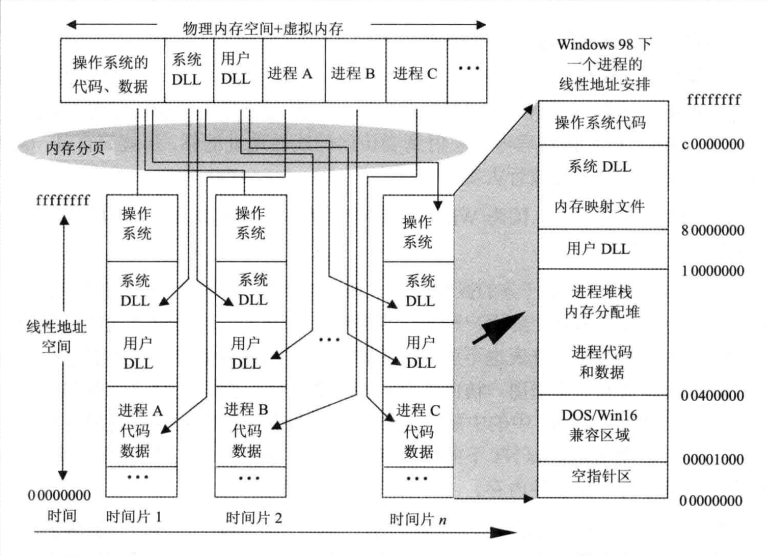
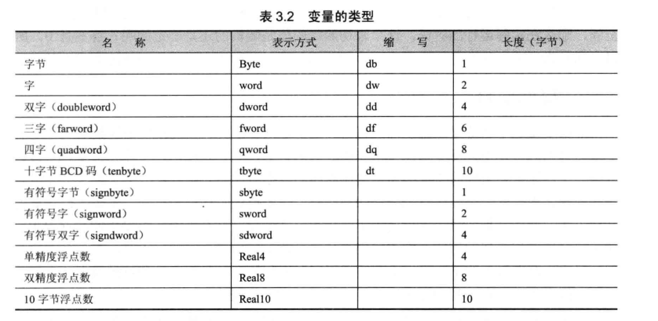
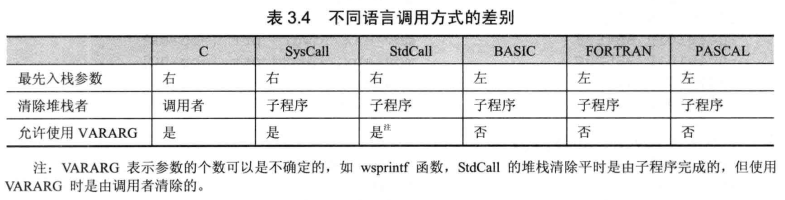
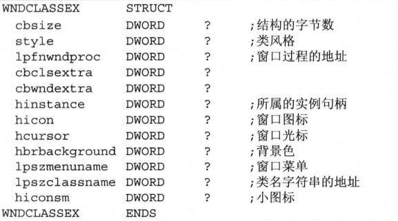

Notes on Win32 汇编0x00 Background knowledge80x86系列处理器发展历史指令集Windows历史Windows特色80x86处理器工作模式实模式保护模式虚拟86模式Windows内存管理DOS内存安排80386的内存寻址机制80386的内存分页机制Windows的内存安排从Win32汇编角度看内存寻址Windows的特权保护0x01 Programming environment编译器编译过程（MASM）make工具尝试搭建0x02 使用MASMWin32汇编源程序的结构调用API标号、变量和数据结构标号全局变量局部变量数据结构变量的使用使用子程序子程序的定义传输传递与堆栈平衡高级语法条件测试语句分支语句循环语句代码风格匈牙利表示法对匈牙利表示法的补充排版风格代码的组织0x03 窗口程序模块和句柄API创建窗口API
18086(1978, 16-bit) -> 80286(1982) -> 80386(1985, 32-bit) -> 80486(1989)2-> 80586(1993, Pentium) -> Pentium Pro(1995) -> Pentium MMX(1997) ->3Pentium II(1997) -> Celeron(1998) -> Pentium III(1999) -> Pentium 4(2000)4-> ...
x1MS-DOS-1.0(1981) -> MS-DOS-2.0(1983) -> MS-DOS-3.0(1984) -> MS-DOS-3.2(1986)2-> MS-DOS-3.3(1987, most popular) -> MS-DOS-5.0(1990) -> ... -> MS-DOS-6.2234Windows 1.0(1985) -> Windows 2.0(1987) -> Windows 2.1(/286) -> Windows 3.0(1990)5-> Windows 3.1(1992, 16-bit) -> Windows NT 3.11(1993, 32-bit) -> Windows 95(1995)67(for family and personal use)Windows 98, 98 SE, Me -> Windows NT 5.0(Windows 2000)8-> Windows XP(2001) -> WIndows Vista(2007)9(for commercial use) Windows NT 3.5, 4.0 -> Windows Server 2003 ->Windows Server 2008
保持向下兼容性，使用Win32 API作为编程接口。
xxxxxxxxxx11=8086, 无内存分页管理，不支持优先级
xxxxxxxxxx11寻址空间4GB，支持内存分页机制，虚拟内存，支持多任务
xxxxxxxxxx11以任务形式执行在保护模式上，寻址方式与8086相同，特权指令
 640KB限制: 仅有从500h开始到A0000h总共不到640KB的内存是操作系统和应用程序所能够使用的。

实模式下，一个完整的地址由段地址和偏移地址两部分组成。实际物理地址=段地址（16-bit段寄存器中）*16+偏移地址。
保护模式和虚拟模式下，可以用任何一个通用寄存器(32-bit)来间接寻址，32根地址线寻址空间4GB，不必分段即可访问到所有的内存地址。 段寄存器用来描述对一个地址空间的安全属性。要用64-bit长的数据才能表示，这64-bit的属性数据被称为段描述符。段寄存器（仅16-bit）无法放下64-bit的段描述符，将所有段的段描述符顺序放在内存中的指定位置，组成一个段描述符表，而段寄存器中的16-bit用来做索引信息，指定这个段的属性用段描述符表中第几个描述符来表示。这时，段寄存器中的信息不再是段地址，而是段选择器。可以通过它在段描述符表中“选择”一个项目以得到段的全部信息。 80386中引入两个新的寄存器来管理段描述符表。全局描述符表寄存器GDTR（48-bit）指向全局描述符表GDT（包含系统中所有任务都可用的段描述符，仅一个）；局部描述符表寄存器（16-bit）指向局部描述符表LDT（每个任务都有一个独立的LDT，包含每个任务私有的一些段的描述符），LDTR和段选择器一样只存放索引值，指向局部描述符表内存段对应的描述符在全局描述符表中的位置。 16-bit段寄存器中只有高13位表示索引值，剩下的3个数据位中，第0，1位表示程序的当前优先级RPL，第2位TI位用来表示在段描述符的位置（TI=0表示在GDT中，TI=1表示在LDT中）。

线性地址：在保护模式下，“段选择器+偏移地址”转换后的地址 80386处理器把4KB大小的一块内存当作一“页”。每页物理内存可以根据“页目录”和“页表”，随意映射到不同的线性地址上。这样，就可以将物理地址不连续的内存的映射连到一起，在线性地址上是为连续。除了和CR3寄存器（指定当前页目录的地址）相关的指令使用物理地址外， 其他所有指令都是用线性地址寻址。 是否启用内存分页机制由80386处理器中CR0寄存器中的位31（PG位）决定的。PG=0，分页机制不启用，所有寻址就是系统中实际的物理地址；PG=1，进入内存分页管理模式，所有的线性地址要经过页表的映射才得到最后的物理地址。 。。。。。。  
Windows系统一般在硬盘上建立大小为物理内存两倍左右的交换文件用作虚拟内存。利用80386处理器的内存分页机制，交换文件在寻址上可以很方便地作为物理内存使用。只需在真正访问到地时候将硬盘文件的内容读入物理内存，然后重新将线性地址映射到这块物理内存就可以了。

Windows操作系统为用户程序“安排好了一切”。为用户程序的代码段、数据段和堆栈段全部预定义好了段描述符。程序员不必去关心段寄存器。
xxxxxxxxxx21DOS中： 中断向量表2保护模式中： 门、中断描述符表IDT、优先级（0级~3级）
ml.exe用法
ml [选项] 汇编源文件列表 [/link连接选项]
xxxxxxxxxx11example: ml /c /coff xx.asm
link.exe用法
link [选项] [文件列表]
xxxxxxxxxx31example: link /subsystem:windows xx.obj yy.lib zz.res (普通PE文件)2link /subsystem:console xx.obj yy.lib zz.res (控制台文件)3link /subsystem:console /dll /def:aa.def xx.obj yy.lib zz.res （DLL文件）
rc.exe(资源编辑器)用法
rc [选项] 资源脚本文件名
*.rc -> *.res
(资源文件可以直接用Visual Studio打开、编辑)
make用法
nmake [选项] [/f 描述文件名] [/x 输出信息文件名] [宏定义] [目标]
More details can be found on the Internet
模式定义
段的定义（段->内存上的“分段”）
程序结束和程序入口 (end [开始地址])
注释 (';')
换行 ('')
API： Application Programming Interface
invoke用法
invoke 函数名 [,参数1][,参数2]...
返回值保存在eax中
函数声明
函数名 proto [距离] [语言] [参数1]:数据类型, [参数2]:数据类型, ...
include & includelib 语句
include 文件名 or include <文件名> includelib 文件名 or includelib <文件名>
标号和变量的命名规范
标号定义的格式
标号名: 目的指令 (标号的作用域是当前的子程序，无法跳转到另一个子程序中) 标号名:: 目的指令 (标号的作用域是整个程序，可以跳转到另一个子程序中)
@@ 用法
xxxxxxxxxx71mov cx, 1234h2cmp flag, 13jz @F4mov cx, 1000h5@@:6...7loop @B
全局变量的的作用域是整个程序，定义在 .data 或 .data? 段内。定义格式：
变量名 类型 初始值1, 初始值2, ... 变量名 类型 重复数量 dup (初始值1, 初始值2, ...)

xxxxxxxxxx81; example2.data3wHour dw ? ;未初始化的word类型变量4wMinute dw 10 ;值为10的word类型变量5_hWnd dd ? ;未初始化的双字类型变量6word_Buffer dw 100 dup (1,2) ;200个字，以0001,0002,0001,0002重复100遍7szBuffer byte 1024 dup (?) ;1024字节的缓冲区8szText db 'Hello,world!' ;一个字符串，占用12个字节
未初始化的全局变量的值为0
local 变量名1 [[重复数量]] [:类型], 变量名2[[重复数量]][:类型] ...
xxxxxxxxxx41; example2local loc1[1024]:byte ;一个1024字节长的局部变量3local loc2 ;默认为dword类型的局部变量4local loc3:WNDCLASS ;一个WNDCLASS的数据结构
局部变量无法在定义的时候初始化（存放在栈中）
数据结构是一种自定义的数据类型。
xxxxxxxxxx71结构名 struct23字段1 类型 ?4字段2 类型 ?5...67结构名 ends
xxxxxxxxxx251; example2definition:3WNDCLASS struct4style DWORD ?6lpfnWndProc DWORD ?7cbClsExtra DWORD ?8cbWndExtra DWORD ?9hInstance DWORD ?10hIcon DOWRD ?11hCursor DWORD ?12hbrBackground DWORD ?13lpszMenuName DWORD ?14lpszClassName DWORD ?15WNDCLASS ends1718usage:19.data?20stWndClass WNDCLASS <>21...22or23.data24stWndClass WNDCLASS <1,1,1,1,1,1,1,1,1,1>25...
显示指明变量类型
类型 ptr 变量名
xxxxxxxxxx31; example2mov ax, word ptr szBuffer3mov eax, dword ptr szBuffer
扩展字节
xxxxxxxxxx61movzx ax, bText12movzx eax, bText13movzx eax, cl4movzx eax, ax ; 不带符号位扩展5movsx ... ; 带符号位扩展
变量的尺寸和数量
xxxxxxxxxx21sizeof 变量名、数据类型或数据结构名 ; 尺寸2lengthof 变量名、数据类型或数据结构名 ; 数量
获取变量地址
xxxxxxxxxx21mov 寄存器, offset 变量名 ; 仅全局变量2invoke 函数名, addr 局部变量名和全局变量
xxxxxxxxxx51子程序名 proc [距离][语言类型][可视区域][USES 寄存器列表][,参数:类型]...[VARARG]2local 局部变量列表3指令5子程序名 endp

寄存器或变量 操作符 操作数
xxxxxxxxxx81.if 条件表达式12表达式1为“真”时执行的指令3[.elseif 条件表达式2]4表达式2为“真”时执行的指令5...6[.else]7所有表达式为“否”时执行的指令8.endif
xxxxxxxxxx111.while 条件测试表达式2指令3[.break [.if 退出条件]]4[.condition]5.until 条件测试表达式 （或.untilcxz [条件测试表达式]）6or7.repeat8指令9[.break [.if tui'chu条件]]10[.condition]11.until 条件测试表达式 （或.untilcxz [条件测试表达式]）
匈牙利表示法用连在一起的几个部分来命名一个变量。格式是类型前缀加上变量说明，类型用小写字母表示，说明则用首字母大写的几个英文单词组成。
xxxxxxxxxx71; example2hWinMain 主窗口的句柄3dwTimeCount 时间计数器，以双字定义4szWelcome 欢迎信息字符串，以0结尾5lpBuffer 指向缓冲区的指针6stWndClass WNDCLASS结构7...
模块： 一个模块代表的是一个运行中（装入内存）的EXE文件或DLL文件，用来代表这个文件中所有的代码和资源。 模块句柄： 为了区分地址空间中的不同模块，每个模块都有一个唯一的模块句柄来标识。在Win32中，模块句柄在数值上等于程序在内存中装入的起始地址。
GetModuleHandle 取模块句柄
xxxxxxxxxx131---2invoke GetModuleHandle, lpModlueName3---4lpModuleName：指向含有模块名称字符串的指针（NULL则为本模块）56Example:7szUserDll db 'User32.dll', 08...9invoke GetModuleHandle, addr szUserDll10.if eax11mov hUserDllHandle, eax12.endif13...
RegisterClassEx 注册窗口类
xxxxxxxxxx41---2invoke RegisterClassEx, addr @stWndClass3---4stWndClass: 指向WNDCLASSEX结构的指针

RtlZeroMemory 将一块内存区域置零
xxxxxxxxxx51---2invoke RtlZeroMemory, Destination, Length3---4Destination: 指向内存块的指针5Length: 长度